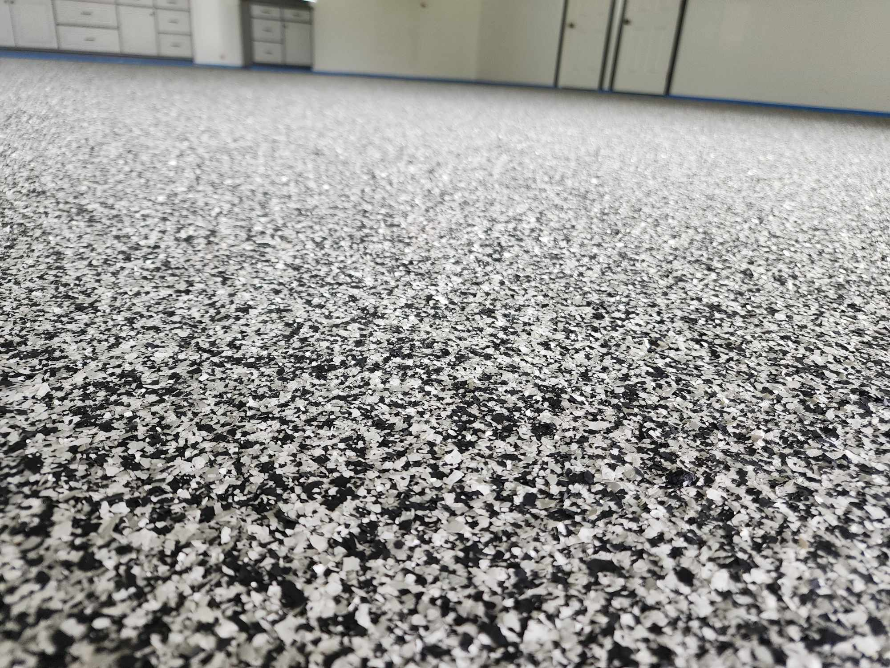

Pricing · December 2024
"How much does it cost?" The honest answer is: it depends. But we can give you a realistic framework — and we always provide a precise free on-site quote before any work begins.
Square footage — the largest single factor. Concrete condition — significant cracking, oil contamination, or previous failed coatings require more prep work and materials. System specified — our full system is priced differently from metallic epoxy, driveway overlays, or commercial-grade industrial systems. Design complexity — driveway overlays with custom scoring, multi-element brick inlay, or hand-cut medallions involve more labor than solid-color stain.
Single-car garage (~250–300 sq ft): $1,200 – $1,800
Full system: moisture vapor barrier, 100% solids epoxy, full flake broadcast, high-solids polyaspartic topcoat. Good concrete condition.
Two-car garage (~400–520 sq ft): $2,000 – $3,200
Our most common residential project. Same full system.
Three-car garage or large shop (~600–900 sq ft): $3,200 – $5,500
Varies significantly based on concrete condition.
Metallic epoxy: Add $1.00–$2.50/sq ft above standard pricing.
Driveway overlay systems: Custom quote required — call for a free assessment.
In 24 years, Arturo has re-coated more floors initially done by bargain contractors than he can count. The pattern is consistent: a homeowner gets a below-market quote, the floor looks fine for six months, then it starts peeling, yellowing, or bubbling. Re-coating costs significantly more than doing it right the first time.
The low quote is almost always low because: no diamond grinding, no moisture vapor barrier, lower-quality base coat, or a topcoat that isn't true high-solids polyaspartic. Each shortcut is invisible on installation day and painfully obvious six to eighteen months later.
Every Crete Creations quote is free, on-site, and precise. Arturo comes to your property, assesses your concrete, and gives you a written quote with no hidden costs. Call (417) 483-7082, email artvette68@yahoo.com, or fill out our contact form.
Request Your Free Quote →